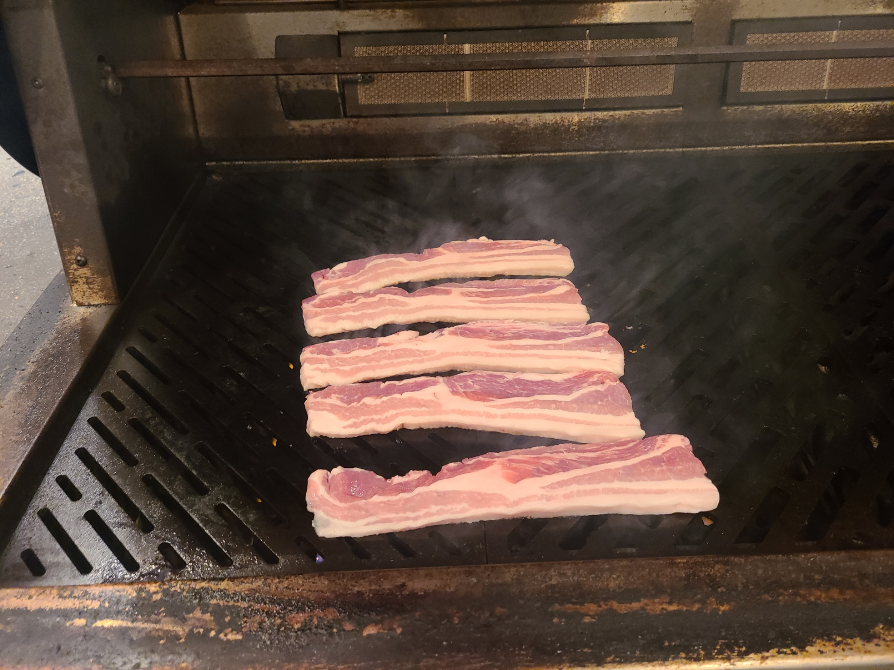
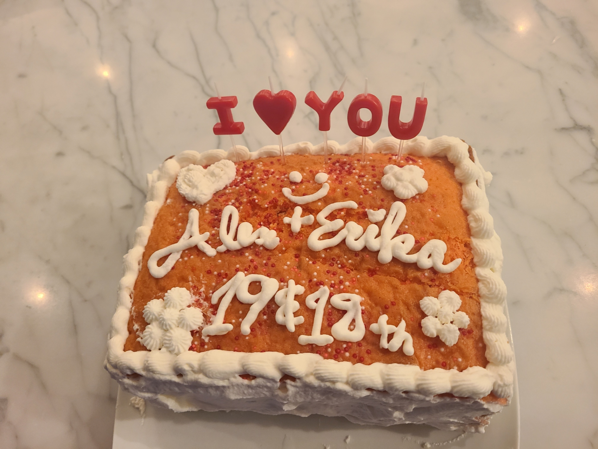
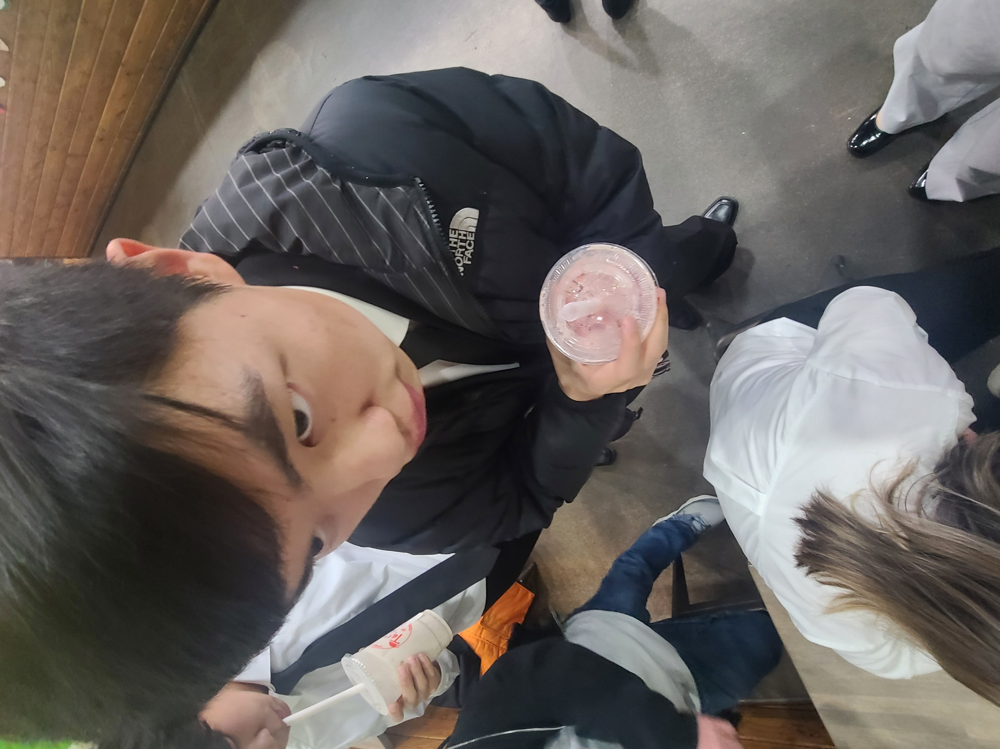
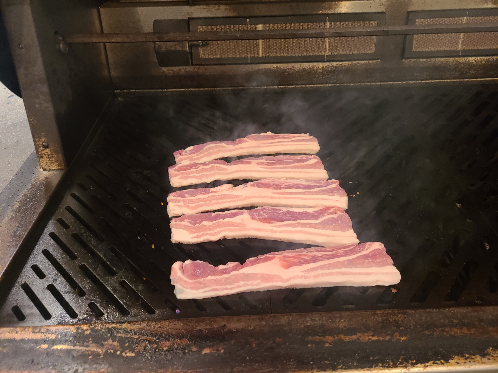
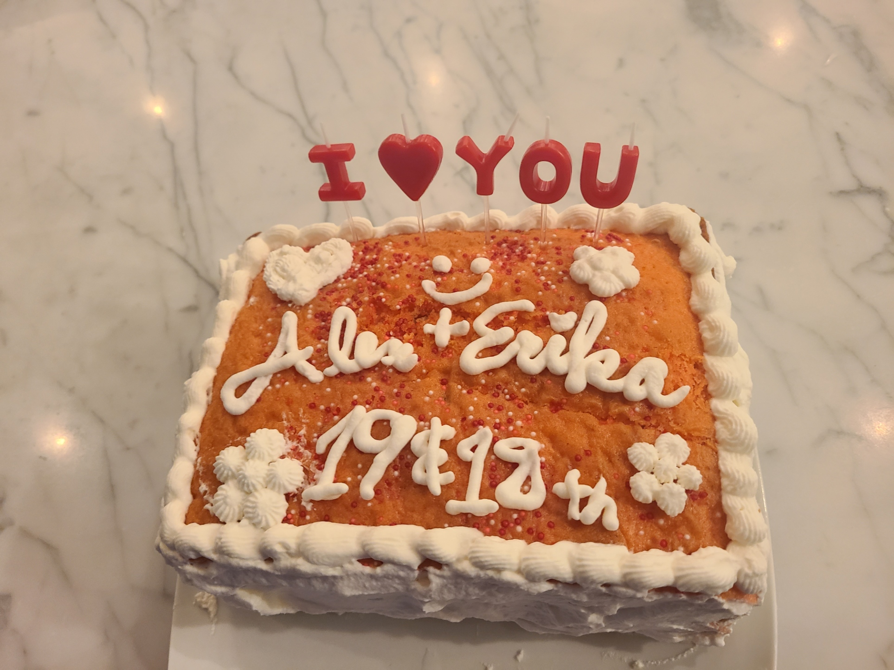
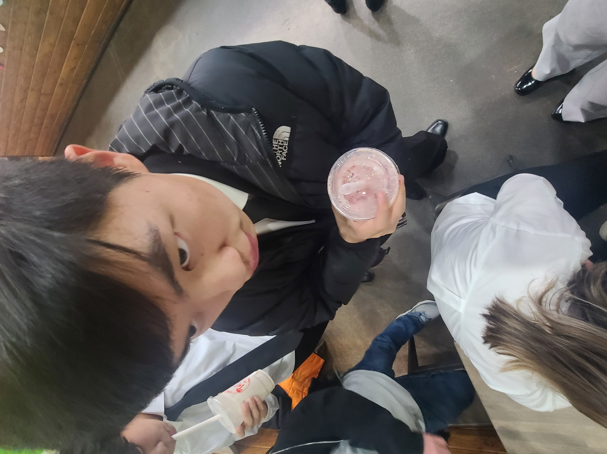
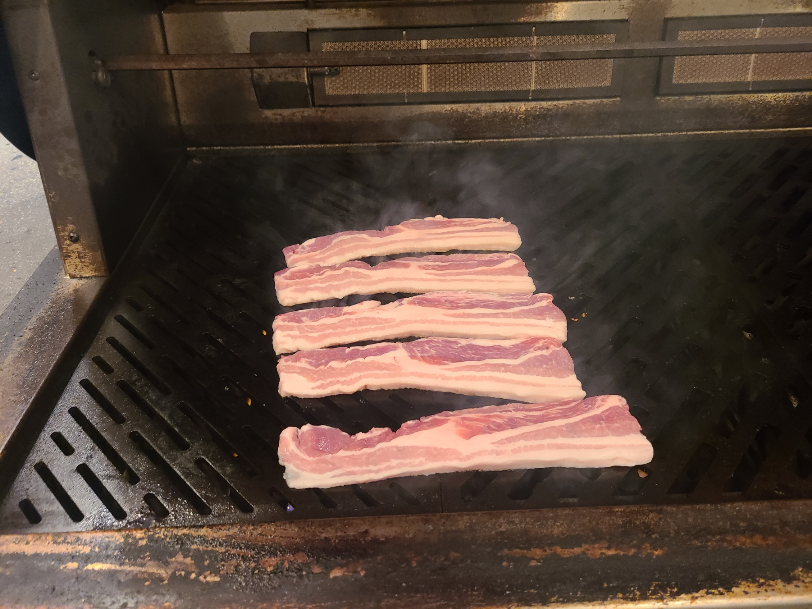
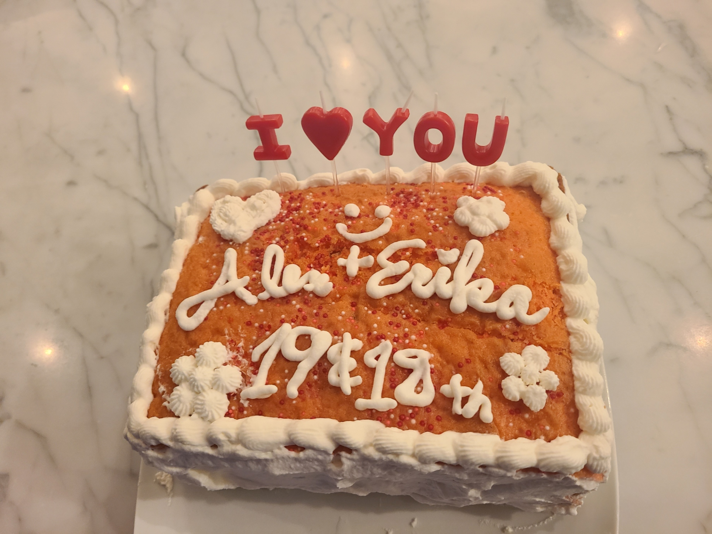
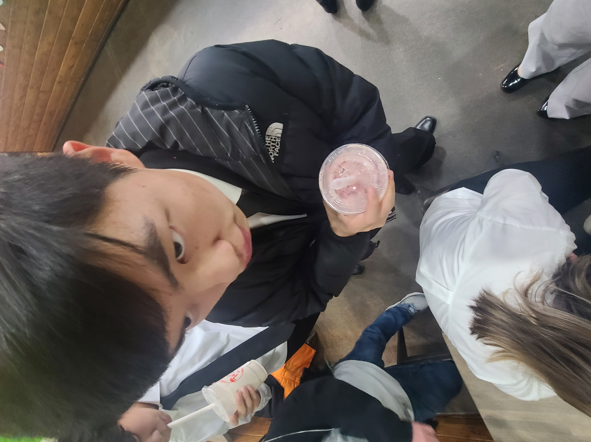

Anna Castillon
Welcome to my page. I am looking for a job in international business. My current work experiences are related to business management and customer relations. I am often told I am very good in social situation and able to handle awkward situations with customers. I enjoy meeting new people and making connections with them whether professionally or personally. When at work I will always be available and ready to help with whatever task is assigned to me. Whatever skills I am missing I am always willing to learn. I give my all when it comes to understanding new concepts and pay attention.
At my previous work experiences, I was often tasked to run a store alone and deal with multiple customers at once. I learned to deal with stressful situations and have experience working for large companies as well as small family-run business. My skills include speaking 3 different language fluently, French, Japanese and English. I have a food handlers permit. Welcome to my page. I am looking for a job in international business. My current work experiences are related to business management and customer relations. I am often told I am very good in social situation and able to handle awkward situations with customers. I enjoy meeting new people and making connections with them whether professionally or personally. When at work I will always be available and ready to help with whatever task is assigned to me. Whatever skills I am missing I am always willing to learn. I give my all when it comes to understanding new concepts and pay attention. At my previous work experiences, I was often tasked to run a store alone and deal with multiple customers at once. I learned to deal with stressful situations and have experience working for large companies as well as small family-run business.
I am often told I am very good in social situation and able to handle awkward situations with customers. I enjoy meeting new people and making connections with them whether professionally or personally. When at work I will always be available and ready to help with whatever task is assigned to me. Whatever skills I am missing I am always willing to learn. I give my all when it comes to understanding new concepts and pay attention. At my previous work experiences, I was often tasked to run a store alone and deal with multiple customers at once. I learned to deal with stressful situations and have experience working for large companies as well as small family-run business.At my previous work experiences, I was often tasked to run a store alone and deal with multiple customers at once. I learned to deal with stressful situations and have experience working for large companies as well as small family-run business.
Experience
Manager
• Took customer orders
• Served customers
• Trained new employees
• Accounting for the store
Education
UC Riverside
Portfolio
 







